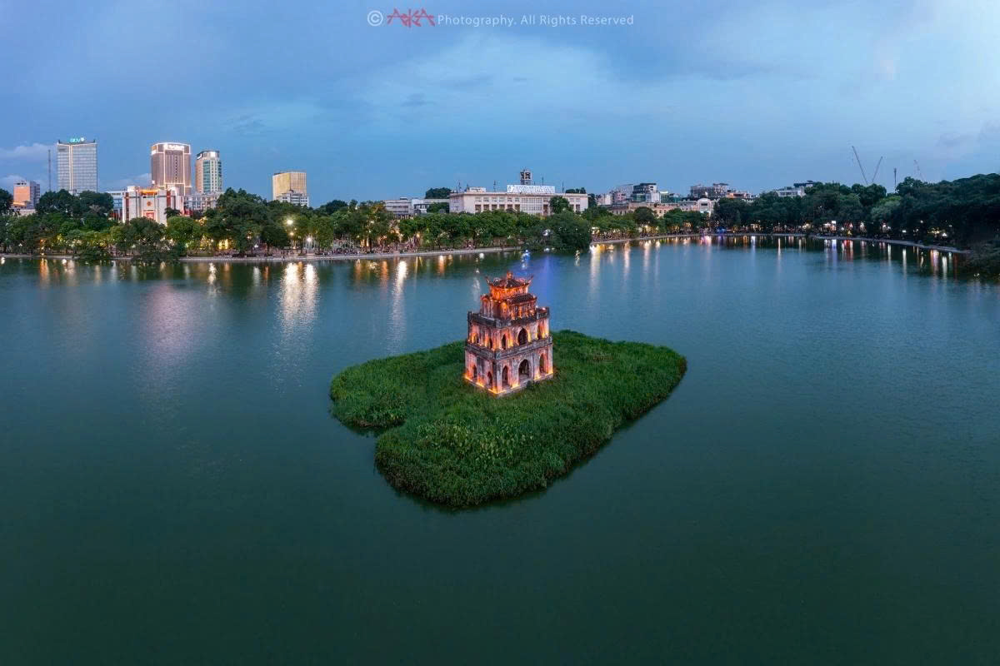
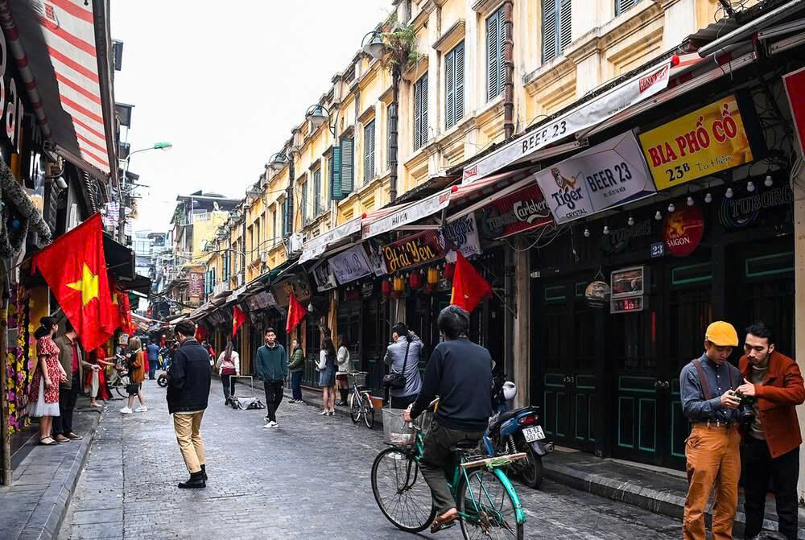
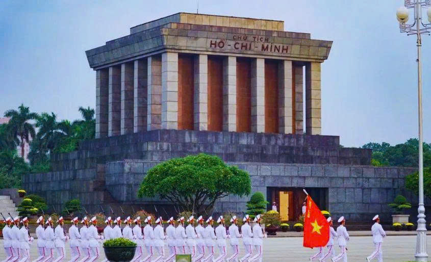

Tại Sao Chọn Hà Nội?
Hà Nội là thủ đô của Việt Nam, nơi hội tụ của lịch sử, văn hóa và hiện đại. Thành phố này mang trong mình hơn 1000 năm lịch sử, từ những di tích cổ kính đến những tòa nhà hiện đại.
Những Điểm Nổi Bật của Hà Nội:
- Phố Cổ: Với các tòa nhà cổ kính và ẩm thực đặc sắc
- Hồ Hoàn Kiếm: Trái tim của thành phố, thức tỉnh mỗi sáng
- Văn Hóa Phong Phú: Bảo tàng, truyền thống, lễ hội
- Ẩm Thực Đặc Sắc: Phở, cơm tấm, cà phê trứng
- Cơ Sở Vật Chất: Khách sạn, nhà hàng, dịch vụ chất lượng cao
Thông Tin Du Lịch Nhanh
| Thông Tin | Chi Tiết |
|---|---|
| Dân Số | Khoảng 8 triệu người |
| Diện Tích | 3.345 km² |
| Khí Hậu | Cận nhiệt đới, 4 mùa rõ rệt |
| Thời Gian Lý Tưởng | Tháng 9-11 và tháng 3-5 |
| Loại Tiền | Đồng Việt Nam (VND) |
Địa Điểm Nổi Bật

Hồ Hoàn Kiếm
Biểu tượng của Hà Nội, nơi tuyệt vời để dạo bộ và thư giãn

Phố Cổ Hà Nội
36 phố phường cổ kính với kiến trúc độc đáo

Lăng Chủ tịch Hồ Chí Minh
Di tích lịch sử quan trọng của đất nước